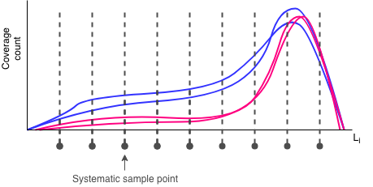
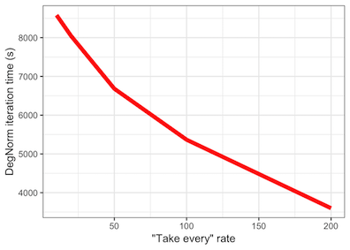
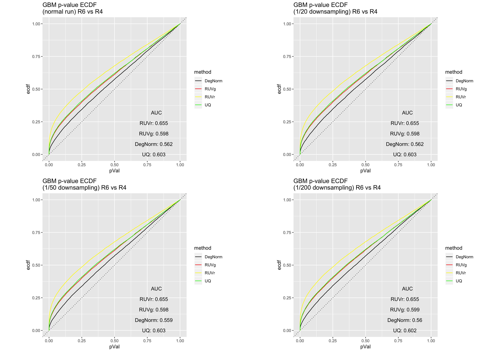
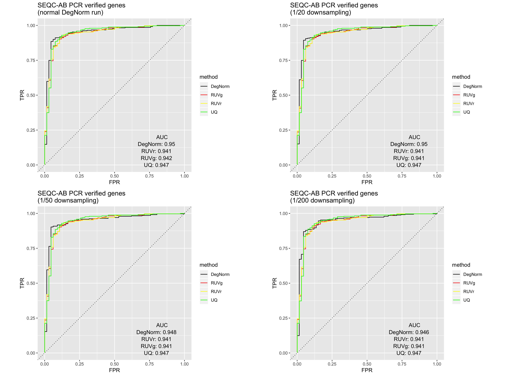
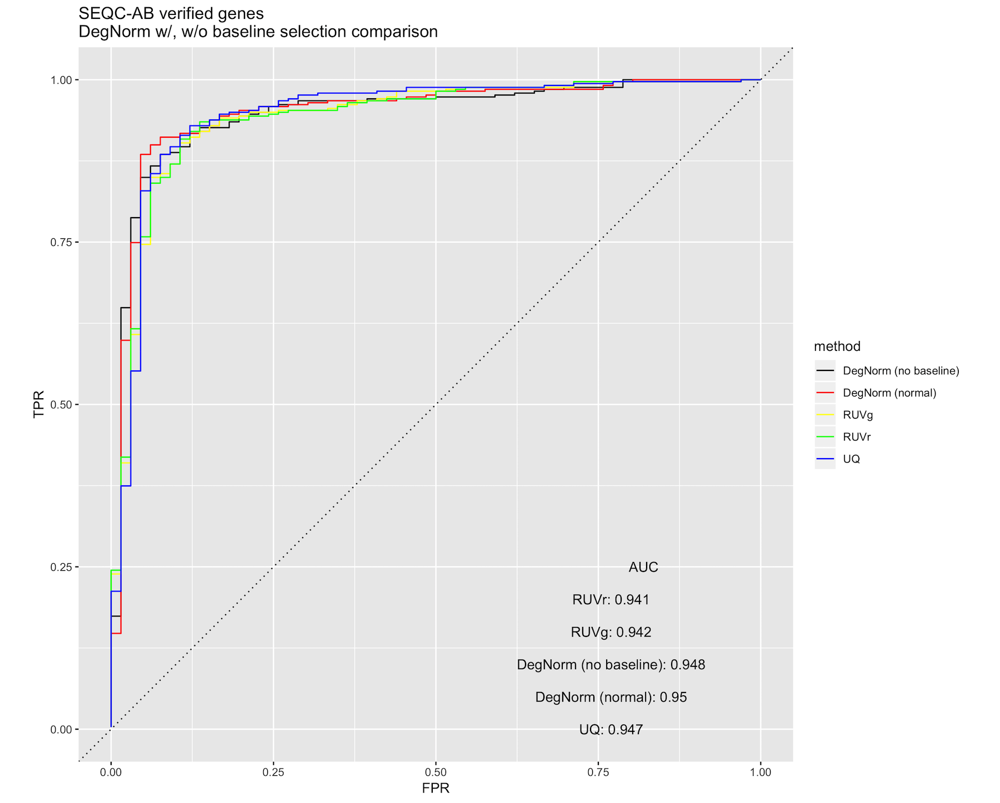
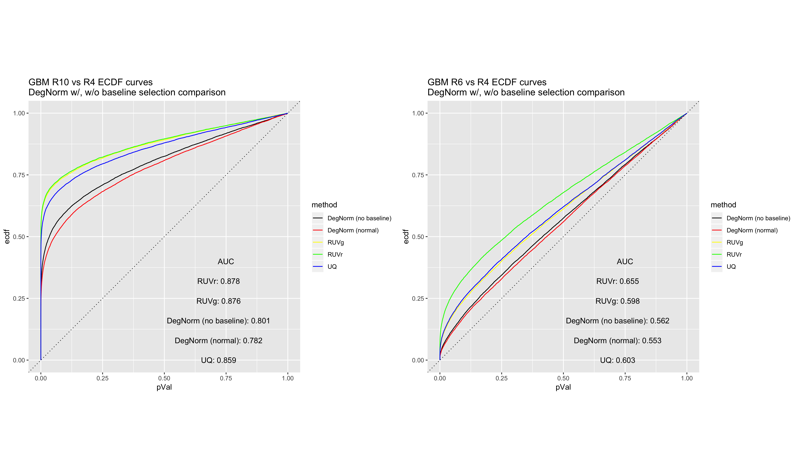

DegNorm speed enhancements
Distributed pipeline runs with degnorm_mpi
Use degnorm_mpi to distribute DegNorm over parallel compute nodes via MPI, the Message Passing Interface standard.
With MPI, preprocessing and coverage matrix approximations will scale by the number of available compute nodes. MPI also allows you to best exploit the embarrassingly parallel nature
of the DegNorm workload.
See the degnorm_mpi example in the usage docs.
Downsampling coverage matrices
The backbone of the DegNorm normalization pipeline is the non-negative matrix factorization with over-approximation (NMFOA) algorithm.
NMFOA is a computationally expensive algorithm, requiring --nmf-iter-many singular value decompositions of the coverage matrix.
The SVD is O(n^3) in terms of flop count (according to Trefethen and Bau), so genes with smaller coverage matrices will
naturally run through NMFOA faster than larger ones.
In an effort to trim down the coverage matrices, the --downsample-rate argument in degnorm allows you to use a systematic sample
for each gene's coverage matrix in lieu of the larger original ones. The --downsample-rate is just the integer-valued
"take-every" step size, so that the original coverage matrix is reduced by a factor of 1 / (downsample rate). At a modest
downsampling rate, the overall shape of the coverage curves should still be recognizable.

Obviously, the higher the downsampling rate, the faster the DegNorm iterations will complete, because DegNorm executes SVD approximations on smaller and smaller gene coverage matrices. The figure below illustrates the time savings at various downsampling rates from the 9-sample gliablastoma (GBM) cell line study data set:

Impact
We recreated the DE analysis using the GBM data as well as the Sequencing Quality Control (SEQC) AA vs. AB data at various downsampling rates. In comparison to the non-downsampled results (as in, 1/1 downsampling), we see that moderate downsampling - e.g. a rate of 1/20 - does not substantially impact DE analysis and still allow for DegNorm retains its edge over existing RNA-Seq normalization methods, while offering 50%+ DegNorm iteration time savings.
GBM RIN 10 vs. RIN 4 ECDF curve comparison

GBM RIN 6 vs. RIN 4 ECDF curve comparison
SEQC AA vs AB ROC curve comparison

To run DegNorm with downsampling, add -d <take every> (full option --downsample-rate <take every>) where
take every is the integer step size for the systematic sample. Note that genes with total concatenated exon length
less than the downsample rate will not be included in the DegNorm pipeline.
Skipping baseline selection
The most expensive part of the DegNorm normalization algorithm is in finding a "baseline" region of non-degraded coverage across all samples, a process referred to as baseline selection. In the event that that region is small, the approximation of a single gene's coverage curves may require over a thousand SVDs.
Skipping baseline selection offers the largest speedup, more than any level of downsampling, but likely with a more heavy impact on DegNorm's performance. We cannot wholly endorse skipping baseline selection, but for those who are seeking ballpark DegNorm results in an hour or two, this option may be for you.
Impact
The impact of skipping baseline selection is experiment-specific, and is likely due to the nature and extent of RNA degradation present in the samples. As is shown in the figure below, the skipping baseline selection negatively impacts the SEQC AA/AB DE ROC curve.

At the same time, DegNorm still retains its advantage over the existing normalization methods with respect to GBM p-value ECDF curves, even while skipping baseline selection.

Run DegNorm without baseline selection at your own risk by adding the --skip-baseline-selection flag at the command line.